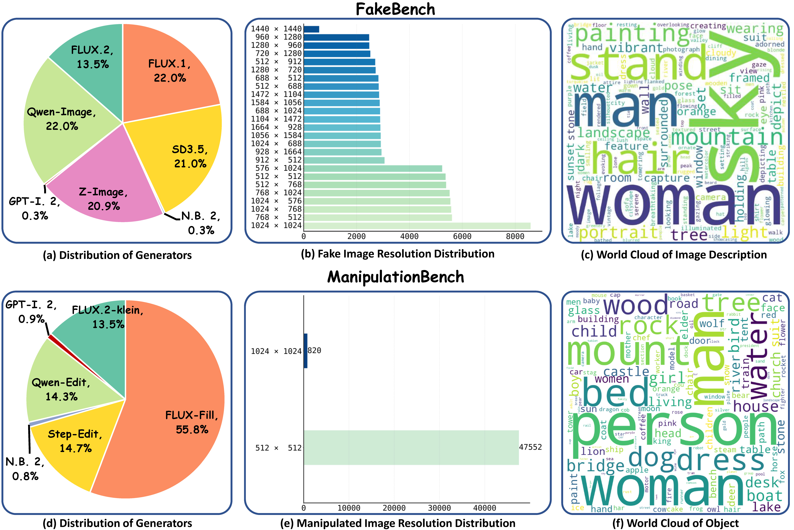

DailyBench: A Unified Benchmark for AI-Generated and Manipulated Images from Modern Generative Models

Abstract
Recent advances in generative models have shifted AI-generated image detection from identifying easily distinguishable, fully synthetic images to identifying highly realistic content generated by both modern generation and localized manipulation pipelines. However, existing detection benchmarks are often built with outdated generative models and primarily emphasize full-image synthesis, creating a growing mismatch between benchmark data and the images encountered in real-world generation and editing scenarios. To bridge this gap, we introduce DailyBench, a high-quality unified benchmark for evaluating whether AI-generated image detectors can generalize across both modern full-image synthesis and localized object-level manipulation. DailyBench contains two complementary subsets: FakeBench, which includes high-quality images synthesized by recent open-source and commercial generative models, and ManipulationBench, which introduces challenging object-level edits applied to real images using advanced image-conditional models. This design makes DailyBench a realistic testbed for studying both generator-level generalization and manipulation-aware detection under subtle local edits. In addition to the benchmark, we propose FPD (Fake-Preferences Detector), a diagnostic-driven strong baseline that encourages forgery-sensitive representation learning. FPD combines a dual-pathway architecture with a cascaded compression classifier to progressively extract and compact forgery-relevant cues, and further introduces a fake-preference sampler to reduce excessive bias toward the real class. Experiments on DailyBench reveal substantial robustness gaps in current detectors: methods reporting 91–96% balanced accuracy on GenImage drop to 60–76% on FakeBench and 54–66% on ManipulationBench. These results show that existing detectors remain poorly generalized to realistic synthesis and localized manipulation, highlighting DailyBench as a rigorous testbed for developing robust and manipulation-aware AI-generated image detection methods.
Dataset Sample Examples

FakeBench.

ManipulationBench.
Dataset Statistics

Experimental Results
FakeBench Results
| Methods | SD3.5 | FLUX.1 | FLUX.2 | Z-Image | Qwen-Image | N.B. 2 | GPT-I. 2 | Avg. | |||||||
|---|---|---|---|---|---|---|---|---|---|---|---|---|---|---|---|
| R.Acc | F.Acc | R.Acc | F.Acc | R.Acc | F.Acc | R.Acc | F.Acc | R.Acc | F.Acc | R.Acc | F.Acc | R.Acc | F.Acc | ||
| UniFD | 98.90 | 2.70 | 98.72 | 0.19 | 98.83 | 0.50 | 98.80 | 1.03 | 98.63 | 0.51 | 99.59 | 0.00 | 98.54 | 0.00 | 49.78 |
| LOTA | 99.83 | 0.13 | 99.82 | 0.02 | 99.89 | 0.35 | 99.81 | 0.11 | 99.86 | 0.03 | 100.00 | 0.00 | 99.64 | 98.91 | 57.03 |
| DRCT | 85.16 | 29.05 | 85.04 | 21.78 | 84.72 | 27.65 | 85.26 | 41.82 | 85.17 | 30.12 | 82.45 | 22.86 | 86.50 | 22.26 | 56.42 |
| FatFormer | 99.64 | 2.12 | 99.55 | 0.04 | 99.54 | 0.22 | 99.59 | 0.94 | 99.54 | 0.49 | 100.00 | 0.00 | 99.64 | 12.04 | 50.95 |
| NPR | 61.85 | 62.66 | 61.59 | 79.09 | 60.40 | 66.24 | 61.55 | 73.95 | 60.94 | 80.88 | 63.67 | 59.18 | 62.04 | 91.24 | 67.52 |
| SAFE | 94.94 | 2.48 | 95.02 | 3.15 | 95.23 | 2.41 | 94.68 | 1.88 | 94.91 | 3.88 | 97.14 | 5.31 | 94.16 | 77.74 | 54.49 |
| AIDE | 94.00 | 13.29 | 94.29 | 20.40 | 93.88 | 12.15 | 94.16 | 21.95 | 94.22 | 22.63 | 95.92 | 5.71 | 94.89 | 15.33 | 55.34 |
| Effort | 38.74 | 70.04 | 39.74 | 74.31 | 38.30 | 69.16 | 39.45 | 82.49 | 39.09 | 88.76 | 40.00 | 85.31 | 40.51 | 97.08 | 60.21 |
| ForgeLens | 99.96 | 0.19 | 99.93 | 0.66 | 99.90 | 0.31 | 99.92 | 0.23 | 99.91 | 7.37 | 100.00 | 0.00 | 100.00 | 98.91 | 57.66 |
| LTD | 99.77 | 2.64 | 99.74 | 1.36 | 99.77 | 2.48 | 99.72 | 5.06 | 99.77 | 4.88 | 100.00 | 0.41 | 100.00 | 68.98 | 56.04 |
| Aligned | 99.81 | 49.30 | 99.81 | 16.27 | 99.84 | 3.01 | 99.86 | 12.12 | 99.85 | 21.39 | 100.00 | 42.04 | 99.27 | 10.58 | 60.94 |
| B-Free | 89.22 | 55.74 | 88.96 | 8.49 | 90.01 | 5.35 | 89.06 | 37.28 | 89.39 | 2.78 | 91.02 | 0.82 | 89.05 | 0.73 | 52.70 |
| RPOBE | 87.67 | 96.65 | 87.85 | 19.18 | 88.46 | 28.66 | 87.58 | 71.62 | 88.13 | 77.43 | 89.80 | 42.45 | 86.86 | 36.13 | 70.60 |
| OmniAID | 88.87 | 49.04 | 88.69 | 37.20 | 88.95 | 16.40 | 88.12 | 39.57 | 88.69 | 45.43 | 89.83 | 54.87 | 89.05 | 29.19 | 63.84 |
| DDA | 86.19 | 76.34 | 85.81 | 30.97 | 86.92 | 22.70 | 85.99 | 63.12 | 86.44 | 56.47 | 86.12 | 45.31 | 84.31 | 51.09 | 70.27 |
| DINO-Det | 94.11 | 73.86 | 93.96 | 86.82 | 94.24 | 51.48 | 93.88 | 57.26 | 94.23 | 58.92 | 94.69 | 29.39 | 93.80 | 54.38 | 76.50 |
| FPD (Ours) | 83.34 | 84.63 | 87.67 | 89.78 | 89.61 | 63.21 | 88.70 | 68.39 | 83.68 | 71.90 | 94.69 | 29.39 | 90.62 | 53.76 | 76.78 |
Table 1. Accuracy (%) comparison on FakeBench. We report Fake Accuracy (F.Acc), Real Accuracy (R.Acc), and Average Accuracy (Avg.) to evaluate detector performance and generalization capability. N.B. 2 and GPT-I. 2 denote Nano Banana 2 and GPT-Image 2, respectively.
ManipulationBench Results
| Methods | FLUX-Fill Random | FLUX-Fill Object | FLUX.2-klein | Qwen-Edit | Step-Edit | N.B. 2 | GPT-I. 2 | Avg. |
|---|---|---|---|---|---|---|---|---|
| UniFD | 50.16 / 50.16 | 39.02 / 50.83 | 38.43 / 50.72 | 39.61 / 50.39 | 39.10 / 50.72 | 37.64 / 50.26 | 37.45 / 50.23 | 40.20 / 50.47 |
| LOTA | 49.92 / 49.92 | 37.79 / 49.92 | 37.31 / 49.92 | 38.88 / 49.97 | 37.84 / 49.89 | 37.32 / 50.00 | 100.00 / 100.00 | 48.43 / 57.08 |
| DRCT | 51.00 / 51.00 | 42.51 / 50.86 | 41.60 / 50.56 | 44.79 / 52.17 | 41.31 / 50.13 | 49.92 / 57.21 | 57.82 / 63.99 | 46.99 / 53.70 |
| FatFormer | 49.86 / 49.86 | 37.90 / 49.95 | 37.56 / 50.11 | 39.06 / 50.05 | 38.36 / 50.26 | 37.32 / 50.00 | 45.91 / 56.96 | 40.85 / 51.02 |
| NPR | 45.09 / 45.09 | 40.99 / 46.02 | 44.98 / 49.81 | 52.40 / 55.17 | 44.00 / 48.77 | 52.70 / 55.53 | 81.92 / 80.33 | 51.72 / 54.38 |
| SAFE | 52.22 / 52.22 | 41.63 / 51.94 | 39.00 / 49.99 | 38.99 / 48.96 | 37.40 / 48.26 | 37.97 / 49.46 | 84.94 / 86.67 | 47.45 / 55.35 |
| AIDE | 51.13 / 51.13 | 39.86 / 50.65 | 38.16 / 49.63 | 50.45 / 58.63 | 48.31 / 57.54 | 43.54 / 54.43 | 51.65 / 60.43 | 46.15 / 54.63 |
| Effort | 45.60 / 45.60 | 46.81 / 45.70 | 52.62 / 50.67 | 59.98 / 56.98 | 56.05 / 53.52 | 64.16 / 60.85 | 75.90 / 68.99 | 57.30 / 54.61 |
| ForgeLens | 50.01 / 50.01 | 37.85 / 49.98 | 37.46 / 50.05 | 41.25 / 51.89 | 39.41 / 51.17 | 41.41 / 53.17 | 91.82 / 93.49 | 48.45 / 57.10 |
| LTD | 49.88 / 49.88 | 37.76 / 49.88 | 37.37 / 49.97 | 39.00 / 50.04 | 37.95 / 49.98 | 37.48 / 50.04 | 66.57 / 73.40 | 43.71 / 53.31 |
| Aligned | 50.51 / 50.51 | 38.46 / 50.44 | 37.94 / 50.42 | 67.27 / 73.18 | 38.51 / 50.43 | 55.16 / 64.14 | 45.91 / 56.96 | 47.68 / 56.58 |
| B-Free | 62.36 / 62.36 | 57.67 / 69.97 | 57.12 / 63.57 | 77.92 / 79.95 | 58.59 / 64.61 | 34.70 / 45.43 | 42.47 / 51.86 | 55.83 / 62.53 |
| RPOBE | 61.67 / 61.67 | 56.58 / 62.93 | 59.58 / 65.46 | 92.10 / 91.51 | 55.12 / 61.83 | 65.47 / 69.61 | 80.34 / 82.47 | 67.26 / 70.78 |
| OmniAID | 52.66 / 52.66 | 44.34 / 53.36 | 47.75 / 56.40 | 88.10 / 88.50 | 54.57 / 61.46 | 67.32 / 71.82 | 56.55 / 63.08 | 58.75 / 63.89 |
| DDA | 54.54 / 54.54 | 46.52 / 54.82 | 55.51 / 62.29 | 89.44 / 89.20 | 56.77 / 62.88 | 56.63 / 62.48 | 80.20 / 81.96 | 62.80 / 66.88 |
| DINO-Det | 52.22 / 52.22 | 42.41 / 52.97 | 43.35 / 53.99 | 62.95 / 69.01 | 45.69 / 55.53 | 40.43 / 52.04 | 65.14 / 71.55 | 50.31 / 58.18 |
| FPD (Ours) | 52.56 / 52.56 | 46.01 / 54.09 | 49.36 / 57.82 | 79.02 / 80.47 | 54.17 / 60.70 | 46.25 / 53.22 | 73.86 / 77.16 | 57.32 / 62.29 |
Table 2. Average / Balanced accuracy (%) comparison on ManipulationBench. FLUX-Fill Random and FLUX-Fill Object denote FLUX-Fill using random and object masks, respectively. Qwen-Edit and Step-Edit denote Qwen-Image-Edit and Step1X-Edit-v1p2, respectively.
For more detailed results, please see the paper .
BibTeX
@article{YourPaperKey2024,
title={Your Paper Title Here},
author={First Author and Second Author and Third Author},
journal={Conference/Journal Name},
year={2024},
url={https://your-domain.com/your-project-page}
}